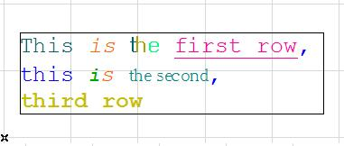
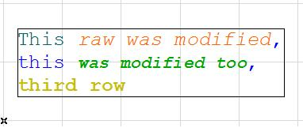

APIAny_ChangeContentID
Change the content of a text or a textual label element.
GSErrCode ACAPI_Goodies (
APIAny_ChangeContentID,
const API_ContentPars* contentPars
);
Parameters
- contentPars
- [in/out] Parameters of the element and contents.
Return Values
NoError- The function has completed with success.
APIERR_BADPARS- The input parameters are not given correctly.
APIERR_REFUSEDPAR- The passed element is not a text or a textual label.
APIERR_PAROVERLAP- The range overlaps two or more paragraphs.
APIERR_PAROVERFLOW- The beginning position (from) run over the content length.
APIERR_MEMFULL- Not enough memory.
For other common API errors see the API Errors document.
Remarks
This function is used to modify the content of a multistyle text or textual label. The styles of the runs won't be lost. The new content piece will pick up the style (font, size, faceBits...) of the character on the from position in the original content. The content member of API_ContentPars should not contain line end characters and ranges may not overlap paragraphs. The another way to change the content is using ACAPI_Element_Change function. With it you can set the style of the text also by passing textContent and paragraphs handles in API_ElementMemo structure. Don't forget to free the allocated memory blocks.
This function is a non-undoable data structure modifier function. See more details on this topic at Command Overview.
Example
Changing the content of a text element:
The original element:
The result element:GSErrCode err = NoError; err = ACAPI_CallUndoableCommand ("Change the content of a text element", [&] () -> GSErrCode { API_ContentPars contPars; Int32 numOfChanges = 2; contPars.head.index = index; contPars.head.typeID = API_TextID; contPars.from = reinterpret_cast<Int32 *> (BMAllocatePtr (numOfChanges * sizeof (Int32), ALLOCATE_CLEAR, 0)); contPars.range = reinterpret_cast<Int32 *> (BMAllocatePtr (numOfChanges * sizeof (Int32), ALLOCATE_CLEAR, 0)); contPars.content = BMAllocatePtr (256 * sizeof (char), ALLOCATE_CLEAR, 0); contPars.separator = reinterpret_cast<Int32 *> (BMAllocatePtr (numOfChanges * sizeof (Int32), ALLOCATE_CLEAR, 0)); if (contPars.from == nullptr || contPars.range == nullptr || contPars.content == nullptr || contPars.separator == nullptr) return APIERR_MEMFULL; contPars.from[0] = 5; // byte position contPars.range[0] = 16; // byte number contPars.from[1] = 28; contPars.range[1] = 13; CHCopyC ("raw was modified too", contPars.content); contPars.separator[0] = 16; // byte offset contPars.separator[1] = 32; GSErrCode err1 = ACAPI_Goodies (APIAny_ChangeContentID, &contPars, nullptr); BMKillPtr (reinterpret_cast<GSPtr *> (&contPars.from)); BMKillPtr (reinterpret_cast<GSPtr *> (&contPars.range)); BMKillPtr (reinterpret_cast<GSPtr *> (&contPars.content)); BMKillPtr (reinterpret_cast<GSPtr *> (&contPars.separator)); return err1; }); return err;

Requirements
- Version: API 6.1 or later
- Header: APIdefs_Goodies.h